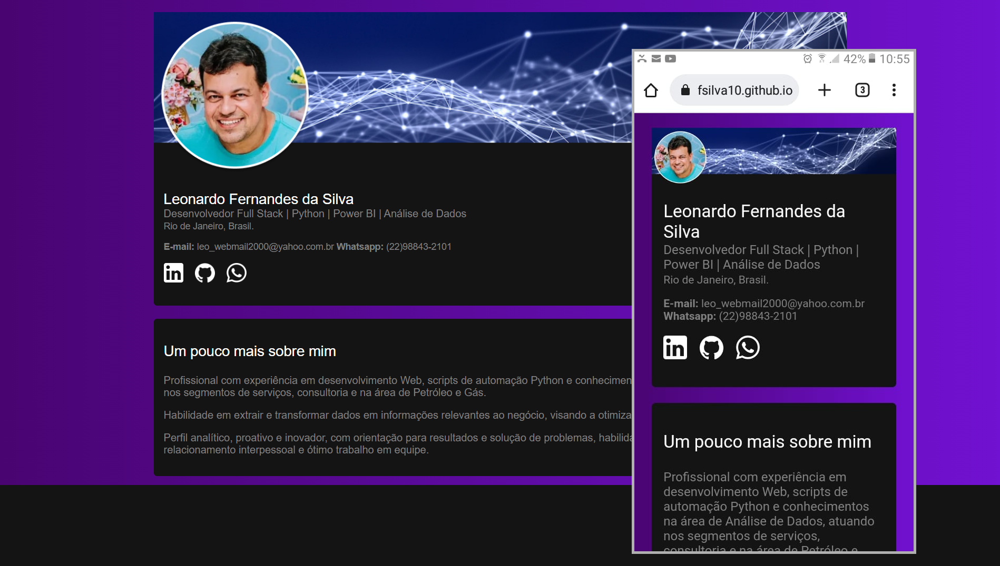

Um pouco mais sobre mim
Profissional com experiência em desenvolvimento Web, scripts de automação Python e conhecimentos na área de Análise de Dados, atuando nos segmentos de serviços, consultoria e na área de Petróleo e Gás.
Habilidade em extrair e transformar dados em informações relevantes ao negócio, visando a otimização de tempo e recursos.
Perfil analítico, proativo e inovador, com orientação para resultados e solução de problemas, habilidade de escuta ativa, organização, relacionamento interpessoal e ótimo trabalho em equipe.
Experiência
Desenvolvedor full stack | Analista de Dados
Editora 7 Letras · Freelance
dez de 2021 - o momento · 2 anos
Rio de Janeiro, Brasil · Remoto
Desenvolvedor full stack
IBGE · Tempo integral
out de 2022 - out de 2023 · 1 ano
Rio de Janeiro, Brasil · Remoto
Diretor | Desenvolvedor full stack
SMART FUSION · Tempo integral
Sócio Fundador
nov de 2014 - set de 2022 · 7 anos 11 meses
Cabo Frio, Rio de Janeiro, Brasil · Presencial
Analista Desenvolvedor | Gerente de Projetos
PETROBRAS · Tempo integral
jan de 2003 - out de 2014 · 11 anos 10 meses
Macaé, Rio de Janeiro, Brazil · Presencial
Desenvolvedor Júnior
INSTITUTO SILVA SERPA · Tempo integral
jan de 1998 - dez de 2002 · 5 anos
São Pedro da Aldeia, Rio de Janeiro, Brasil · Presencial
Formação
Universidade Federal Fluminense
Bacharelado, Administração.
Ago de 1999 - Jun de 2004
Instituto Silva Serpa
Técnico em Informática.
Jan de 1995 - Dez de 1997
Certificações

Habilidades
Projetos
Power BI - Dashboard de Projetos
Power BI - Dashboard de Ações da Bolsa
Power BI - Dashboard de Receitas X Pagamentos
Python
Script Python que exibe cotações de ações com seus respectivos gráficos e exporta os dados para o Excel.
Script Python que permite acessar, atualizar, incluir e excluir dados de uma lista Sharepoint.
Análise de Dados
Projeto (Python) que analisa as ações da Bolsa de Valores para investimento.
Projeto (Python) que analisa os dados de inflação por país.
ASP.Net C#
Petrol - CRUD em ASP.Net C#, POO e Oracle PL/SQL com dados sobre plataformas de exploração de petróleo.
HTML, CSS e Javascript
Site para Portifólio de Projetos e informações curriculares para recrutadores.
PHP
Script PHP para acessar um banco de dados MySQL via PDO e exportar o resultado para o Excel.